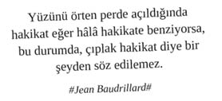

Profesyonel yöneticiler; geçici bir süre için emanet etmiş oldukları egolarını, dikenli kariyer patikalarından geri alarak, bünyelerinin her hücresine itina ile yerleştirmiş; egolarının nadasa bırakıldığı dönemlerde yapılan saldırılara dair alınmış notları itina ile intikam planlarına dönüştürmüş, dünyayı yönetme yetkinliği ve motivasyonunda hazır kıta hedeflerini bekleyen profesyonellerdir.
Profesyonel yöneticiler, iş hayatı ve sosyal yaşamın tüm bileşenlerinde etkin bir şekilde yönetici kimliği algısını yöneten ve bu kimliğin gereksinimlerine uygun yaşayan profesyonel bireylerdir.
Profesyonel yöneticilerin yönetici kimliklerini etkin bir şekilde yönettikleri alanların göze çarpanları aşağıdaki gibidir:
• İletişim Yönetimi
• Ofis Ortamı Yönetimi
• Çalışan İlişkileri Yönetimi
• Network / İlişki Yönetimi
• Kişisel Gelişim Yönetimi
• Sosyal Medya Yönetimi
• Seyahat Yönetimi
• Özel Hayat Yönetimi
İletişim Yönetimi
Profesyonel bir yönetici mutlaka kısa, öz ve herkesin ilk bakışta anlaması mümkün olmayan kısaltmalar içeren “Slm, OK, Go 4 it, No, ?, ???, Yuh, Oha, Çüş, vb” gibi söylemleri içeren mail’ler atmalıdır.
Yazılan mail’lerde; imla hataları yaparak, Türkçe karakterlere dikkat etmeyerek, yarı İngilizce yarı Türkçe yazarak, çok yoğun bir anda yazılmış / gönderilmiş olduğu imajı ve “Olm hayvan gibi yoğunum, siz ameleler gibi yatmıyorum. Email yazacak zaman bile bulamıyorum” mesajı verilmelidir.
Yüzeysel bir kafa ile çalışanın, ancak takım arkadaşlarıyla birlikte, uzun çabalarla anlamaya çalışacağı; subject kısmına ayrı, içeriğine ayrı cümle yazarak mail atmak çok profesyoneldir.
Tamamen Türklerin olduğu bir iletişim matrisinde atılan mail’lerin tamamının İngilizce olması, arada dil sürçmüş gibi bir iki Fransızca kelimeye yer verilmesi, dile hâkimiyetin, özgüvenin ve o pozisyona tesadüfen gelinmediğinin en güzel göstergesidir.
Gecenin ilerleyen saatlerinde email atmak, pozisyon olarak daha üst düzey birinden gecenin ilerleyen saatlerinde mail alınmışsa hemen cevap yazmak çok profesyoneldir.
Pazar gecesi çalışanlarını email bombardımanına tutup haftanın yoğunluğunu hafta başlamadan onlara hissettirmek her profesyonel yöneticinin topun ayağına yakıştığı noktadır.
Arada atılan email’lerin altında “Sent from my iPad” yazması büyük puan toplar. “İşlerimin hepsini iPad’imde konsolide ettim; hem teknolojiye hem de verimlilik yönetimine çok hâkimim” mesajı verilir.
Kendisine; onay almak / izin istemek / “Abim / / Ablam ne olur” diye yalvarmak için atılmış olan tüm email’lere kısaltma ile cevap verip “Ok, Go, No, Yuh, BNC (Bu Ne Cüret), BSY (Boşan da Semerini Ye), İOBİ (İnsan Olsan Bunu İster miydin) vb” email’in altına da isminin baş harflerinin kısaltmasını koymak “Hamit Tanrıverdi: HT, Abdurrahman Pordoğan: AP, Himmet Abdullah Topatan: HAT, Sevginaz Sudöven: SS, Döndü Yılmaz: DY, Mualla Derindeniz, MD vb” profesyonel standartlardandır.
Herkesin amele gibi bakıp kafasına göre toplantı koymaması için takvimini uluorta paylaşmamak gerekir.
Herhangi bir email iletişiminde bilgisayarı açmadan tüm operasyonu (toplantı organize etme, uygun olduğu zamanları paylaşma, iş delege etme, işlerle ilgili statü alma vb) BlackBerry / iPhone veya mini iPad üzerinden yönetmek büyük puan kazandırır.
Kendisine gelen email’leri forward edip “Action Please” “???” “FYI” “FYI, FYA” seçeneklerinden biri ile paketleyip dağıtmak profesyonelliğin şanındandır.
Profesyonel yönetici “Falanca işi yapalım” demek yerine “Falanca işini yapmak ister misin?” diyendir.
Profesyonel yönetici iletişiminde yer alan herhangi bir cümle Türkçe bitmez, bitemez.
Profesyonel yönetici her cümlesinde mutlaka laf sokar ve mesaj verir.
Profesyonel yöneticiye email atarken email’in sonunda kesinlikle rica edilmemeli, kariyerin salahiyeti için her daim arz etme seviyesi korunmalıdır.
Doğrudan raporlanan yöneticiyi atlayarak onun üstündeki yöneticiye email atmak, rüzgâra karşı işemekten farksızdır. Süreçten tertemiz, ağrısız, sızısız kurtulabilme ihtimali yoktur.
Ofis Ortamı Yönetimi
Sabah işe geldiğini nazikçe belli etmek (klavye sesi, profesyonel bir öksürük, ayakkabı topuğu, tadında bir balgam toparlama sesi vb) ve çalışanlarına günaydın dememek fark yaratır.
Sabah mutlaka, herkeste bulunmayan, yurtdışından alınmış özel bir mug ile filtre kahve içilir.
Kahvaltı günün çok erken saatlerinde, sabah sporu öncesinde yapılmış olması gerektiği için ırgat gibi ofiste kahvaltı etmek (kürtböreği, poğaça, sakallı, sucuklu yumurta, arasından yumurtalar taşmış sandviç, kavurmalı kaşarlı pide, mıhlama, ucuz bir mısır gevreği vb) hiç profesyonel değildir.
Ofis ortamı, özellikle çalışma masası çok temiz olmalı ve üzerinde az eşya barındırmalıdır. Tasarımdaki minimalist yaklaşım, profesyonel yöneticinin kafasının netliğini yansıtırken doğru kararlar veren doğru yönetici algısını perçinler. Masaya şöyle bir bakıldığında “Olm herif / hatun ne kadar düzenli. İşlerini de böyle düzenli ve titiz yönetiyor” mesajı verilmelidir.
Çalışma masasının üzerinde, insani yönlerinin de ne kadar kuvvetli olduğunu gösteren, pahalı ve tercihen yurtdışından alınmış bir çerçevede güzel bir aile resmi yer almalıdır.
Ofis ortamında herkeste göremeyeceğimiz cinsten şık tasarımlı iPhone / iPad deck’leri, surround kablosuz ses sistemleri, 3D plazma bulunmalıdır.
Ofis ortamında mutlaka “Biz geçmişimize değer veriyoruz” mesajı taşıyan Piri Reis dünya haritası, İstanbul fotoğrafı, ebru veya hat çalışması ile “Geçmişimize değer verirken modernliğimiz konusunda da çok netiz” diyen, özel bir koleksiyondan alınmış Atatürk portresi bulunmalıdır.
Ofis ortamının tasarımı esnasında feng-shui prensipleri göz önünde bulundurularak yaşam enerjisi doğru bir şekilde yönetilmelidir.
Ofis ortamında yöneticinin isminin yazdığı dokuma halı, pirinç kaplama isimlik, hiç kullanılmayan dolmakalemlikler, üzerinden 6 ay geçmiş dergiler, katıldığı en dandik eğitimin bile çerçeveletilmiş sertifikası, sehpada kutusundan çıkarılmadan ikrama hazır duran çikolatalar, masa üzerinde bakkal defteri görünümlü ajanda, sanattan hiç anlamadığını bir kilometreden gösteren altın varaklı kabartma çerçeveli çakma bir tablo, “Hindistan’a da gittim” mesajı veren bir sürü at, eşek, fil, kirpi, golgi aygıtı heykelcikleri, belgesel veya para ekranı açık olmayan televizyon bulundurmak; yöneticinin kendine yakışan varken çıplak dolaşmasıdır.
Masaya imzaya gelen evrakları hemen imzalamak, imzalamadan önce evrakı göndereni çağırıp n adet soru sormamak hiç profesyonel değildir.
Masaya getirilen filtre kahve veya bitki çayının hemen içilmemesi, soğuduğu için değiştirilip yenisinin yudumlanması yöneticinin kendine yakışanı giymesidir.
Masa telefonundan sekreter haricindeki diğer aramalara cevap vermek, mahalle kıraathanesinde Mango Passion Fruit Frappuccino sipariş etmekten farksızdır.
Çalışanlarla İlişki Yönetimi
Çalışanlara “Sizi sürekli terfi ettirmek istiyorum, bunun için elimden geleni yapıyorum, hatta kendi kariyerimi riske atıyorum. Ama maalesef Sudenaz, Pelinsu ve Himmet taş koyuyor” mesajını sürdürülebilir şekilde vermek gerekir.
Çalışanlara düzenli olarak “Daha iyisini yapabilirsin. Hâlâ bir sürü eksiğin var” mesajını vererek çalışanların havaya girmesini önlemek büyük puan kazandırır.
Çalışanların sunmuş oldukları her işte mutlaka eleştirilecek bir şey bulmak (“Fontunu beğenmedim, PDF yapsaydın, Excel’de rakamlar otomatik değişiyor mu?” vs) farklı düşünen farklı gören yönetici duruşudur.
Çalışanların yaptıklarını birbirlerine kontrol ettirmek, her birini ayrı ayrı zarflamak, zarf sonuçlarına, çelişkilerine göre bazılarını yükselen değer, bazılarını adadan gidecekler listesine koymak entegre profesyonellik ihtiva eden bir davranıştır.
Çalışanların tüm zaaflarına, özel hayatlarına dair kullanılabilecek tüm bilgilere hâkim olmak ve gereken durumlarda bu bilgileri kullanmak üst düzey yöneticiliğe giden yolda önemli bir adımdır.
Profesyonel yönetici kendi özel hayatına dair (ilişkileri, arkadaşları, dostları, ailesi, hobileri, zaafları, güçlü yanları vb) herhangi bir ipucunu çalışanları ile paylaşmaz ve kendini her zaman yukarıda, ulaşılamaz olarak konumlandırır.
Profesyonel yönetici, çalışan ilişkilerinde her zaman mesafeli olup, ense tokat yaklaşımlarından her daim uzak durur. Yapılan her espriye gülmez. İş önceliğini düzenli olarak vurgular.
Şirket harcamaları konusunda “İşini düzgün yaptıktan, hedeflerini tutturduktan sonra gerisi hikâye! Rahat ol, koy masraf formuna rahvan gitsin” algısı yaratırken 5 TL’nin hesabını sormak fark yaratır.
Çalışanlarından düzenli bir şekilde statü güncellemesi istemek ve “Sürekli yayıyorsunuz ama ben sizi hayvan gibi takip ediyorum” mesajını vermek yöneticiliğin olmazsa olmazlarındandır.
Statü güncellemelerini belli bir rutine oturtmadan talep etmek daha şıktır. Altında çalışanı sürekli şaşırtmak gerekir.
Çalışanlar tam çıkmaya hazırlanırken çağırmak ve “Siz çıkıyor musunuz? Ben de hayvanlar gibi çalışacağım, siz yayın” mesajını vermek çok profesyoneldir.
“Bade hâlâ gelmedi mi? Merak ettim acaba bir şey mi oldu?” söylemleri ile çalışanın gelmemesini vurgulamak, çalışanı düşündüğünü hissettirmek, tüm bunları yaparken yine de otorite gücünün kimde olduğunu ifade etmek kariyer basamaklarını ışık hızı ile tırmanacak olmanın göstergesidir.
Entegre ve fark yaratan bahaneler bularak, çalışanlar için mümkün olduğunca seyahat, eğitim gibi harcama çıkaracak aksiyonlardan uzak durulmasını sağlamak ve “Niyazi Bey ekibini ne kadar da verimli yönetiyor” mesajını vermek çok profesyoneldir.
Çalışanların atmış olduğu yüz adet mail’in sadece iki tanesine cevap vermek ve “Çok yoğunuz, boş işlerle uğraşmıyoruz. Şirket benim sayemde ayakta. Sürekli işimi gücümü bırakıp senin zevzek mail’lerine mi cevap vereceğim?” mesajını vermek şampiyonluk kutlama hazırlıklarını yaptırır.
Çalışanlarla birlikte yemek yememek, asansöre birlikte binmemek, off-site toplantılara aynı arabada gitmemek, profesyonel yöneticinin marka yönetimi açısından elzem unsurlardır.
Network / İlişki Yönetimi
Profesyonel yönetici, hedeflerini çok net tanımlamış, hedefleri doğrultusunda kendini ve çevresini itina ile şekillendiren insandır (somut kariyer, iş, para, statü, tanışılacak insan, alınacak tekne, çıkılacak dünya turu hedefleri). Profesyonel hayatın acımasız fırtınalarına göre şekillenip, rotasız, rassal limanlarda kariyerini başkalarına yem edenlerden olmaz.
Profesyonel yönetici, aldığı her nefeste, kendisini hedeflerine ulaştıracak etkili isimlerin listesini değerlendirir. Etki alanı ve hedeflerine katma değer sağlama kapasiteleri açısından yükselen ve düşen isimleri sürekli sıralar, statülerini güncel tutar. Akabinde bu listeyi “tanıdığı ve tanışmak istediği” kişiler şeklinde tasnif eder. Amele gibi her gördüğüne “Aaa selam” demez. Her gördüğü ile tanışmaz. Her tanıştığına hayat hikâyesini anlatıp samimi olmaz, malzeme vermez.
Profesyonel yönetici, tanışmak istediği kişi ile buluşma öncesinde, o kişinin güçlü yönleri, zaafları, hobileri, sevdikleri, sevmedikleri, tutkuları ve kendisini gururlandıran en büyük başarılarını içeren tek sayfalık bir özet bilgi hazırlayarak, buluşma esnasında da bu bilgilerden faydalanıp karşısındaki insanı etkileyeceği ve kendi hedefleri doğrultusunda değerlendireceği hususunda emindir. Tanışmak istediği kişi ile bir araya geldiğinde ırgat gibi “Eeee Himmet Abi, ne var ne yok? İkinci köprünün tamir çalışmaları anamızı ağlattı be” muhabbetlerine girmez.
Network geliştirmek için tanışmak istediği kişilerin executive asistant’ları, sekreterleri ile iyi ilişkiler kurmak, hal hatır sormak, hediye göndermek, güvenlerini kazanmak; ne kadar güzel olduklarından, ne kadar şık giyindiklerinden bahsetmek; profesyonel network yönetimi sıralama turlarında pole pozisyonu almaktır.
Profesyonel yöneticinin, tanışmak istediği insanlara ulaşmak için Facebook, Twitter, Instagram, Whatsapp, Foursquare gibi ortamlardan faydalanıp yüz yüze kahve içme seansı koparma doğrultusunda ilerlemesi; localı profesyonel beach’lerden birinde denize şambriyel ve donla girmesinden farksızdır.
Profesyonel yönetici, kurduğu her ilişkide takipçidir. Tanışma eyleminin gerçekleşmesini müteakip email / tweet vs atıp kendini hatırlatarak, hal hatır sorarak, karşı tarafın ilgisini çekecek “Burnunda top çevirmek, etrafında alev olan bir çemberden atlamak, sigara içerken sigarayı burnuna sokup nefes vermek, suyun içine dalıp hapşırmak” gibi bir paylaşımda bulunur.
Ne kadar çok insan ile tanışılırsa, o kadar çok fırsat doğabileceğini ummak, origami ile komodo ejderi yapmaktan farksızdır.
Profesyonel yönetici, yemeğini asla yalnız ve kendinden daha alt pozisyonlardaki kişilerle yemez. Her yemek okazyonunu hedefleri doğrultusunda bir fırsata dönüştürebilir. Altı aylık, makro bir yemek planına sahiptir. Hangi gün, kiminle, nerede, ne yiyeceği, hangi konuları konuşacağı, hangi hedeflerle yemek yiyeceği bellidir.
Profesyonel yönetici, mekân sahipleri, headhunter’lar, lobiciler, sivil toplum kuruluşu insanları, politikacılar, halkla ilişkilerciler, gazeteciler, iş adamları gibi network’ü geniş kişilerle enseye tokat ilişki kurmayı önceler. Asla çaycı, tornacı, güvenlik görevlisi, rektifiyeci, şoför, temizlik görevlisi, uzman, uzman yardımcısı, takım asistanı, filizlemeci, pürmüzcü, kültürcü, şiropraktör, vatman, franken, yemek denetçisi, tarak fırçacı, maçacı, hamurkâr, bükücü, su verici, son ütücü gibi insanlarla muhatap olmaz.
Profesyonel yönetici, hızlıca sohbeti başlatabilecek, devam etmesini sağlayabilecek, arada bir yakınlık oluşturabilecek, karşıdakinin beğenisini hızlıca kazanabilecek düzeyde ayaküstü konuşma sanatına hâkimdir. Hâkimiyet sağlanamadığı takdirde her zaman işe yarayacak şu tekerlemeyi kullanır: “Sen bir harikasın. Daha çok şey anlat lütfen.”
Profesyonel yönetici, kariyerine katma değer sağlayacak üst düzey yöneticilerinin ilgilendikleri konular hakkında bilgi sahibi olduğu için düzenli olarak o konularla ilgili üst düzey yöneticilerine profesyonel makaleler (tercihen Harvard Business Review’dan) gönderir, kitaplar hediye eder. Yöneticilerle girilen tüm diyaloglarda söylemleri her daim o konulara bağlar.
Profesyonel yönetici, ilişki geliştirmek istediği kişilerle tanışmak için kartvizitini hoyratça kullanmaktan imtina etmez.
Kişisel Gelişim Yönetimi
Profesyonel bir yöneticinin, “origami ile bütçe yönetimi, sushi ile proje yönetimi, NLP ile koçluk, atlarla liderlik, yelken ile türev alma, thai&kick box ile business plan hazırlama, sucuk pişirme ile feedback verme, karpuz kesme ile kalite yönetimi, halden domates alımı ile müzakere teknikleri, komodo ejderleri ile inovasyonda süreklilik, gaz çıkarırken çakmakla alev yönetimi ve motivasyon, birbirinin bardağına tükürüp su içme yöntemiyle kurum kültürü, kiteboard ile sıra dışı liderlik vb” gibi her konuda sürekli kendini geliştirmesi esastır.
Profesyonel bir yönetici hayatta karşılaştığı her meydan okumayı:
“Dip boyasının geldiği bir iklimde dikkati kıyafet, ayakkabı ve çantaya kilitlemek;”
“Üst yönetime sunum yaparken projeksiyon cihazının çalışmaması, sunumun içindeki videonun açılmaması;”
“Diyetin zirvesindeyken Dora’nın doğum günü kutlaması için dışarıdan söylenen pasta, cup cake ve ponçik kombinasyonu;”
“Hesabı yediye bölüp faturayı da yedi farklı şekilde alabilir miyiz? Ayrı ayrı expense yapacağız;”
şeklinde bir kişisel gelişim fırsatı olarak görür.
Profesyonel yöneticiler, kişisel gelişim uzmanlarından düzenli olarak profesyonel danışmanlık alır. Gelişimlerini düzenli olarak takip ederler. Amele gibi 10 adımda liderlik, 12 adımda satış, 9 adımda dikiş, 7 adımda marka yönetimi, 6 adımda ara ütü, 4 adımda su bükme, 11 adımda pikaçu eğitmenliği vs gibi kitaplar okuyarak kişisel gelişim aksiyonlarına girmezler.
Profesyonel yönetici kamuya açık network ortamlarında düzenli olarak, kişisel gelişimin yüzeyselliği ve piyasaya düşmesi hakkında serzenişte bulunur. Yüzeysel, konuyla ilgili deneyimi olmayan insanların yazdığı kitapları acımasızca eleştirir.
Kendisinin takip ettiği kişisel gelişim kitaplarının, danışmanlarının ve yöntemlerinin tamamının yurtdışı kökenli olduğunu vurgular.
Profesyonel yönetici kişisel gelişim araçlarını kariyer hedefleri (CEO olmaya giden yol, CMO olmaya giden yol, Süper kahraman nasıl olunur, Batman’i anlamak, Aduket çekmek, Bölüm sonu canavarını geçmek, Dibi gelmişken fönle konu nasıl kapanır vs) doğrultusunda kullanır. Her kişisel gelişim aracına atlamaz.
Profesyonel yönetici, kişisel gelişimin spiritüel kısmını her daim önceler. Bu bağlamda düzenli yoga yapmak, çakra açtırmak, baksı dansı yapmak, nefes atölyelerine katılmak, çevreyi feng-shui’ye göre düzenlemek, shiatsu eğitimi almak, radyestezi eğitimi almak, kristal taş terapisi yaptırmak, homeopati eğitimi almak, kinesioloji eğitimi almak, kiropraktike hâkim olmak, enerji kılıç ve kalkanları ile donanmak, telekinezi ve astral seyahat etmek çok profesyoneldir.
Okuduğu kişisel gelişim kitaplarını odasının başköşesinde sergilemek; profesyonel bir iş yemeği ortamında, parmaklarını yalayıp, kompresör gibi kemiğin iliğini emerek yemek yemekten farksızdır.
Her dakika Üstün Dökmen, Doğan Cüceloğlu gibi konuşup iş ortamında mesaj vermek, profesyonel bir toplantıda elini kulağına götürüp gazel okumaktan farksızdır.
Profesyonel yönetici, takip ettiği kişisel gelişim kitabının 17. sayfasında ya da aldığı danışmanlığın 2. seansında mutlaka gelişmeye başlar.
Kişisel gelişim kitabının üzerinde mouse kullanmak, karpuz kesmek, çokomel kâğıdı düzleştirmek, dikiş kalıbı çizmek, kupon yapmak hiç profesyonel değildir.
Sosyal Medya Yönetimi
Sosyal medya dünyasında varlık göstermek her modern profesyonel yöneticinin to-do-list’inde yer alan ve ziyadesiyle kredisi olan bir eylemdir.
Profesyonel yönetici, öncelikli olarak Facebook’ta malzeme (Çalışanları ne paylaşmış?, Kıçını, başını açan var mı? Şirket hakkında olumsuz konuşan var mı? İş seyahatinde birbirine yakınlaşıp alkol düzeyini aşan, âlem fotosunu koyan var mı? Birlikte olduğu biri var mı? İlişkileri ne düzeyde? İş performansını etkiler mi? Hangi mekânlara gidiyorlar, hangi mekânlarda yiyip içip eğleniyorlar? Aldıkları maaşla bunu nasıl yapıyorlar? Gizledikleri bir şey var mı? vb) toplamak amacı ile hesap açar.
Facebook hesabında özel hayatına dair herhangi bir şey paylaşmak (türev aldığın masa, üzerinde çengel bulmaca çözdüğün kitaplar, sevdiğin insanların ayak numaraları, eşinin, dostunun panoramik diş röntgenleri vb), tarlada çamura batan traktörü çıkarmaya çalışırken iş mülakatı telefonunu açmaktan farksızdır.
Facebook üzerinde herkesin her paylaştığını “like etmek” hiç profesyonel değildir. İşe dair haberleri (satın alma, birleşme lansman vs), herkese katma değer sağlayacağı düşünülen makaleleri, network geliştirmek istenen ve kendinden daha kıdemli kişilerin paylaşımlarını “like etmek” puan kazandırır.
Profesyonel yöneticinin Facebook hesabına koyulacak profil fotoğrafı tercihen: “Ofiste, business casual bir kıyafet ile, ayakta, popo hafif bir şekilde çalışma masasına dayanmış (ama mal gibi çalışma masasına oturulmamış), kollar bağlanmış, profesyonel tebessüm ile, arka fonda abartmadan şirketin hangi şirket olduğunu gösteren logo, bayrak, poster vs görünecek, şirketin en güzel yeri olacak (‘Ulan herif ne güzel yerde çalışıyor lan biz de keşke buralarda çalışabilsek’ dedirtecek), dayanılan masada mutlaka özgün malzemeler (He-Man, Voltran robotları, Star Wars’ın kimsede olmayan koleksiyon parçaları, özel defterler, şık bir maket araba, özel bir maket uçak vs olacak)” şeklinde olmalıdır.
Profesyonel yöneticinin Facebook profilindeki paylaşımlar, kesinlikle herkese açık olmamalıdır. Profesyonel yönetici, arkadaş listesinde yer alan kişileri doğru bir şekilde segmente eden ve bu segmentasyona göre paylaşımlarını filtreleyen ve bu süreci etkin bir şekilde yöneten kişidir.
Profesyonel yöneticinin Facebook profilindeki “friend request” taleplerinde “unread request” sayısı en az 178 olmalıdır. Mutlaka “Birçok insan akın akın benimle arkadaş olmak istiyor. Ama bunlar kim, bakmaya bile fırsatım yok” mesajı verilir.
Profesyonel yöneticinin Facebook profilinde “People You May Know” bölümünde Facebook tarafından önerilen kişilerin hepsi üst düzey yönetici, etkili insanlar, cemiyet hayatı insanları ve popüler kişilikler olmalıdır.
Profesyonel yönetici Facebook üzerinden kesinlikle mesajlaşmaz. Kendisine gelen mesajları okumamak, değerlendirmemek, profesyonel duruşun gereğidir.
Profesyonel yöneticinin Facebook Chat kullanması; A sınıfı şirket arabasının arkasına, içi, hacminin beş katı ve iplerle zar zor bağlanmış saman dolu bir römork takıp işe gelmekten farksızdır.
Profesyonel yöneticinin Facebook profilinde: “Kedi, köpek, komodo ejderi, kirpi, bebek, düşme kalkma atlama, apaçi dansları, romantik şarkı klipleri, Arif’in Manchester’a attığı gol, Messi’nin küçükken burnunda çevirdiği top” gibi videoları paylaşması; üst düzey bir toplantı için gittiği şirkette toplantının ortasında yüksek sesle “Hela nerde toprağam?” diye sormasından farksızdır.
Profesyonel yönetici gerçekleştirdiği nadir paylaşımlar kapsamında mutlaka, TED videoları, vermiş olduğu konferansların videoları, iş dünyasına dair üst düzey paylaşımları barındırmalıdır.
Profesyonel yönetici, katıldığı herhangi bir ortamda: “Bekârlığa veda, Happy Hour, Baby Shower, Farewell to Abdurrahman, Welcome to Mısra, Say Hello to Bade, Pikaçu Graduation Celebration, Happy New Year Party vb” katılımcıların kendisini mal gibi tag’lemesine asla izin vermez.
Profesyonel yönetici, mutlaka gezdiği dünya ülkelerinin fotoğraflarını (özellikle herkesin bir çırpıda gidemeyeceği uzak diyarlar: Avustralya, Yeni Zelanda, Japonya, Vietnam vb) doğru bir başlık taksonomisi ile herhangi bir yorum yazmadan paylaşır. Paylaşmış olduğu fotoğraflarda kesinlikle kendisi bulunmaz. Herkesin gittiği ülkelere gitmek (Paris, İtalya, Londra vb) ve gidilen ülkelerin ünlü yerlerinin önünde fotoğraf çektirmek (Pisa Kulesi’ni devirmek, Eiffel Kulesi’nden makas almak, London Eye önünde elleri havaya kaldırıp yuvarlak yapmak); toplantı esnasında expecto patronum büyüsü yaparak kendini jartiyer giymiş mor bir file dönüştürmekten farksızdır.
Herhangi bir şekilde Facebook üzerinde oyun oynamak (Okey, Tavla, Barbut, Ağaç Ekme, Karpuz Kapuğu Biçme, Cup Cake Pişirme vs) ve bu oyunlarla ilgili mesajlar paylaşmak kesinlikle profesyonel değildir.
Profesyonel yöneticinin, “Tonguç’u Sevenler Grubu, Pikaçu Besleyenler Grubu, Komodo Ejderine Allah Dedirtenler Grubu vs” gibi herhangi bir Facebook grubuna dahil olması, paylaşımda bulunması; üst yönetime gönderilecek executive raporun içerisine lazer epilasyon öncesi, sonrası takip fotoğraflarını koymaktan farksızdır.
Profesyonel yöneticinin kendini aktif olarak ifade ettiği mecraların başında Twitter gelir.
Profesyonel yönetici; haftalık ve aylık “content map”ini, bireysel sosyal medya stratejisi, bireysel marka kişiliği, kimliği ve “tone of voice”una göre hazırlar. Hazırlanan “content map”i günün daha önceden ölçümlenmiş, “learning”leri değerlendirilmiş saatlerinde düzenli olarak paylaşır.
Profesyonel yönetici sosyal medya “tone of voice”u: “Konu ile ilgili olarak size dönüyor olalım. Bu akşam lansmanı yapıyor olacağız. Geribildiriminiz için teşekkür ederim, ivedilikle değerlendirilecektir. Katma değerli paylaşımınız için teşekkür ederiz. Çok naziksiniz. Değerli görüşleriniz bizim için çok önemli” tadında olmalıdır.
Profesyonel yöneticinin düzenli olarak sahipleneceği ve markası ile “align” hashtag’leri
(#internetNereyeGidiyor, , #DmdenYürüyenler, #TakipleşenlerTakipleşiyor, , #2014UmutlarıylaSevişenler, #AvatarRokuTantuniCandır, #DeadlineSerbetEviCandır, #OffBriefTrigonometriMerkezi, #SabahMahmuruPenguenBakımOnarımı, #ToDoListKumrucusu, #PikaçuSeçmeYerleştirmeTeknikleri, #SoteYiyişMekânları, #MrBisonMermiyeKafaAtmaTeknikleri, #MeetingRequestSirAğda, #İkiFilmBirden, #YalnızGüneşŞahittiKaliteKontrol, #TothePointMasajSalonu, #TopolojiSpa, #, ... vb) hazırdır. Her paylaşımında, ilgili hashtag’leri mutlaka paylaşır ve trend oluşturur.
Profesyonel yöneticinin, hatırı sayılır bir takipçi sayısının olması gerektiğinden kendisine düzenli olarak takipçi satın alması (tercihen yumurta kafa olmayanlardan, yurtdışı menşeli hesaplardan) ve “Hayvan gibi takipçim var, sürekli bir şeyler paylaşmamı bekliyorlar. Etkileşime geçiyorlar. Sizi kaç kişi takip ediyor bu arada?” söylemleri ile profesyonel sosyal medya algısını yönetmesi ve sürdürmesinin profesyonelliği üzerine müzakereler devam etmektedir.
Profesyonel yönetici, düzenli olarak İngilizce tweet’ler atarak: “Ne kadar iyi bir İngilizce düzeyi olduğunu, ne kadar dünya insanı olduğunu, ne kadar gelişmeleri takip ettiğini ve ne kadar Türkiye’nin önünde olduğunu” vurgular.
Herkesi amele gibi “re-tweet’lemek”, hüzünleri toplantıda bırakarak Serdar Ortaç’a gidip masanın üstünde oynamaktan farksızdır. Sadece üst düzey yöneticilerin, etkili insanların, cemiyet hayatı insanlarının ve popüler kişiliklerin tweet’leri re-tweet edilmelidir.
Tweet atılırken verilen linklerde mutlaka popüler link kısaltıcı araçlar kullanılmalıdır. Destan gibi upuzun linki tweet’in içine yapıştırmak hiç profesyonel değildir.
Foursquare’de yapılan her check-in’i Twitter’a düşürerek “content map”ten uzaklaşmak, Moleskine defterin üstünde Mont-Blanc ile sudoku oynamaktan farksızdır.
Twitter âleminde kendisini de etkileyecek bir eleştirel durum söz konusu olduğunda proaktif davranıp “Allah’tan böyle mevzular bizde yok” ya da “Geribildiriminiz için teşekkür ederim” söylemleri ile algıyı yönetmek, atılan boklardan kendini uzaklaştırmak çok profesyoneldir.
Twitter’da profesyonel listeler oluşturmak, düzenli olarak trending topic’leri takip etmek, trending topic’lerin profesyonel olanlarına özgün yorumlar yazıp dahil olmak ziyadesiyle profesyoneldir.
Profesyonel yöneticinin atmış olduğu herhangi bir tweet 22’den az re-tweet edilir ve 10’dan az favorilere eklenirse atılan tweet mutlaka silinir, karizma çizdirilmez.
Instagram’da hesap sahibi olmak bir yönetici açısından çok profesyoneldir. Instagram, profesyonel yöneticinin hayata bakışını, fotoğraf yetkinliğini, gezdiklerini gördüklerini, yediklerini içtiklerini anlattığı için revaçtadır.
Profesyonel yönetici etkin çekim yapabilmek için mutlaka şık bir iPhone’a ihtiyaç duyar.
iPhone’da n adet özgün, yetenekli ve mutlaka para ile satın alınmış kamera uygulamaları (super zoom yetkinliği olan, pixel’i yüksek, manuel enstantane, diyafram ayarı yapmaya imkân tanıyan) bulunmalıdır. Standart iPhone kamerası ile fotoğraf çekmek köy fotoğrafçısında Polaroid ile vesikalık çektirmekten farksızdır.
Profesyonel yönetici, iPhone’undaki yetkin kamera uygulamalarına ek olarak fotoğrafları düzenleme, dizme, fotoğraflara takla attırma, Instagram’da bulunmayan atraksiyonlu efektler verme, resimlere yazı yazma gibi amaçlara hizmet edecek uygulamaları da tedarik eder.
Profesyonel yönetici, iş ortamında yapılan herhangi bir etkinlikte (happy hour, birthday, baby shower, ideation meetings, motivation meetings vs), katılımcıları, özgün oyuncakları, afiş, poster fotoğrafları profesyonelce seçilmiş doğru filtreler ve doğru etiketlerle paylaşır.
Profesyonel yönetici iş seyahati esnasında, Boarding Pass’ın fotoğrafını Early Bird filtresi ile çekip (tercihen business koltuğu olduğunu belirten kısmına odaklanarak) gidilecek yerle ilgili bir hashtag ile paylaşır. Ek olarak, Business Lounge’ın ne kadar güzel ve rahat olduğunu belirten bir enstantaneyi (alınan bir drink ya da hafif bir yiyecek görüntüsü) profesyonel kelimeler ile paylaşmak çok şık durur.
Profesyonel yönetici, herhangi bir etkinliğe gidiyorsa mutlaka gidilecek etkinliğin badge’ini Lo-fi filtreli fotoğrafı ile “Bu etkinlik dünyanın en önemli ... etkinliği, dünyanın en önemli tüm ...ları bu etkinliğe gider” mesajı eşliğinde paylaşır.
Profesyonel yönetici, gittiği yerde kaldığı otelin ne kadar havalı, ne kadar lüks olduğunu belirten detaylı lobi, oda fotoğraflarını Nashville filtresi ile çekip “Hep geliyoruz, böyle yerlerde kalıyoruz, sıkıldık artık, insan salaş yerleri, samimiyeti, memleketini özlüyor!” tadında bir söylem ile paylaşır.
Profesyonel yönetici, gittiği şehrin gece hayatıyla ilgili en popüler mekânına giderek, mekânın girişi ve içki sunumları ile ilgili fotoğraf çekip, “Ulan Türkiye’deki mekânlar, bunların yanında çay bahçesi gibi kalır. Bir de buralarda kızlar teklif ediyor” mesajı verir.
Profesyonel yönetici gittiği mekânda katılınan etkinlik ve toplantılara dair bol bol malzemeler paylaşır ve “Siz, bizi goy goy yapıyoruz zannediyorsunuz ama eşekler gibi çalışıyoruz. Nefes alacak vaktimiz yok” mesajı verir.
Profesyonel yönetici katıldığı toplantı mekânının manzarasını X-Pro II filtresi ile toparlanmış bir şekilde toplantı konusuyla ilgili bir hashtag ile paylaşır.
Profesyonel yönetici, çektiği fotoğrafları mecraya yüklerken mutlaka profesyonel hashtag’ler kullanır. (#igers #igersturkey #igersistanbul # #instagood #instafamous #tahta #instagramsevenler #instagramsahitleri #instayiyisenler vs.)
Foursquare
Profesyonel yönetici, İstanbul’un temel profesyonel mekânlarını ilk açan, açılmış olanların ise mayor’ı olan ve mayor’lığı kaptırmayan kişidir. (Örn: Boğaziçi Köprüsü Business Lounge, Fatih Sultan Mehmet Köprüsü Meeting Room, Atatürk Havalimanı CIP Lounge, Profesyonel X AVM’si, Profesyonel X AVM’sinin önü, yanı, arkası, lounge’u vb.)
Profesyonel yönetici, bir mekânın mayor’lığını almak için her gün kendine alarm kurar ve düzenli check-in olmayı unutmaz. Mayor’ın işe gelmediği, mekâna gelmediği gün ve saatleri çok iyi değerlendirir.
Herkeste olmayan rozetlere sahip olmak büyük bir prestij sebebidir. (Örn: Keçiboynuzu Kişisel Gelişim Rozeti, Ateşli Çemberden Atlama Rozeti, Brezilya Fönü Çektirenler Rozeti, To-Do-List Bükme Rozeti, Mekândan En Hızlı Kız Kaldırma Rozeti, Mekânda En Sağlam Erkek Öteleyen Kız Rozeti, 1000 Kişi ile Geri Geri Yürüme Rozeti, 3000 Kişi Birlikte Geğirme Rozeti, Türev Almadan Limit Sorusu Çözme Rozeti vb.)
Profesyonel yönetici, İstanbul’un en prestijli restoran, gece kulübü ve sanatsal mekânlarına düzenli olarak fake check-in’ler yapar. Bu check-in’leri Twitter ve Facebook’ta da paylaşır. Böylece herkes, ne kadar prestijli bir hayat yaşadığına tanıklık eder. (Örn: Her cumartesi geceye Asmalı Mescid’de başlar, Etiler’de devam eder, Reina’da kapanışı yaparım. Her pazar sabah kahvaltımı mutlaka Çırağan Sarayı’nda yaparım. Hafta içi her gün İstanbul’un en prestijli spor salonuna gider, kaslarımı kasarım. Haftada iki gün öğle yemeğimde iş dünyasının prestijli bir ismi ile şehrin en iyi sushi’cisinde Japon mutfağı deneyimlerim ve mutlaka fotoğraf paylaşırım.)
Profesyonel yönetici, check-in olduğu her mekânda ilgili / ilgisiz mutlaka bir comment bırakır. Mümkünse mekânın sote bir yerinin fotoğrafını çekip yorumuyla ilişkilendirir. Böylece gittiği mekânda kimsenin göremediğini görerek farklı olur.
Foursquare bünyesinde özgün listeler oluşturmak çok profesyoneldir. İnsanlar oluşturulan listeler karşısında saygıyla şapka çıkarırlar. (Örn: Ciğerciler, İşkembeciler, Ara Ütücüler, Sir Ağdacılar, Hava Bükücüler, Sakızı Havaya Fırlatıp Dömi Vole Vuranlar vb.)
“I’m at X with Y others” kalıbındaki Y değişkeni profesyonel yöneticinin ismi ile yan yana durabilecek kişiler olmalıdır. Dolayısıyla check-in olmadan önce mekânda kimlerin olduğu detaylı bir şekilde incelenir.
Profesyonel yönetici, mutlaka aktif olarak LinkedIn’de yer alır. LinkedIn profili, profesyonel yöneticinin kafa kâğıdıdır.
Profesyonel yönetici, sektöründe çalışan herkese, herkesin özgeçmişine, günahlarına sevaplarına, başarılarına başarısızlıklarına hâkim olan insandır.
Profesyonel yöneticinin LinkedIn profilinde yapmış olduğu işler hayvan gibi detaylı anlatılmaz. Genel olarak “Kardeşim şu şirkette şu pozisyonda, bu şirkette bu pozisyonda çalıştım. İlgini çekerse, ara konuşalım, ilgimi çekerse görüşürüz o zaman detaylara girerim” mesajı verilir.
Profesyonel yönetici kendi alanıyla ilgili olarak LinkedIn üzerinde global gruplar kurar, aktif olarak bu grupları yönetir ve buralardan ciddi iş imkânları sağlar.
Kendisine gelen arkadaşlık tekliflerini herhangi bir şekilde kabul etmemek, inbox’a gelen mesajlara en erken iki hafta sonra cevap vermek çok daha profesyoneldir.
Profesyonel yöneticinin LinkedIn profiline kimlerin baktığının düzenli takip edilmesi, bakanlar hakkında araştırma yapılması büyük puan kaybettirir.
Seyahat Yönetimi
Profesyonel yöneticiler, seyahat ortamlarının sıcak atmosferlerinin, egolarına yenik düşmüş soğuk sakinleridirler.
Profesyonel yöneticinin sürekli yurtdışı seyahatinde olması: “Olm herif ne kadar önemli ve katma değerli biri ki; şirket onu sürekli sağa sola gönderiyor. Masraf yapıyor. Hayvan gibi lüks otellerde kalıyor” mesajını doğru bir şekilde verdiğinden çok profesyoneldir.
Profesyonel yönetici, dünyanın birçok şehrinin harita detaylarını apartman / sokak / cadde / bulvar derinliğinde bilmelidir. “Hacım, tamam oradan sağdan devam et. X caddesi ile Y caddesinin kesişiminde efsane bir makaroncu yok mu? Tamam. Makaroncunun hemen yanından gir, soldaki ilk apartmanın yanındaki mekân” detayını vererek bulunduğu pozisyona tesadüfen gelmediğini ispatlar.
Genel olarak iş için yurtiçinde seyahat etmek; kafaya sutyen takıp “İkizlere takke” diyerek pazarda satış yapmaktan farksızdır. Mümkünse yurtiçinde seyahat etmez, ederse de paylaşmaz.
Profesyonel yöneticinin tüm seyahat operasyonu, executive asistant’ı (departman administrative asistanı bu şekilde kullanmak hiç profesyonel değildir) tarafından organize edilir.
Seyahat organizasyon sürecinde, uçuş tercihinin “Business Class”, otel tercihinin “Executive Suite” olduğu vurgulanmaz, bu zaten profesyonel yöneticiye dair herkesin bildiği genel geçer bir tercihtir.
Seyahat öncesinde biletler print edilmiş bir şekilde şık bir zarfta gelirken aynı zamanda bilet bilgileri, gidilecek mekândaki hava durumu bilgileri, ülke hakkında ekonomik, politik, sosyolojik veriler, görüşülecek firma ve kişilerle ilgili genel brief SMS / MMS / email / BBM / Whatsapp ile profesyonel yöneticinin iş telefonuna gönderilir.
Profesyonel yöneticinin seyahat yönetimi sürecinde vize hususu gündeme bile gelmez. Pasaportunda hemen hemen her ülkeye ait, hatırı sayılı sürede (Schengen en az 5 senelik, Amerika ve İngiltere en az 10 senelik) vize barındırmak profesyonel yöneticinin olmazsa olmazlarından biridir. Irgat gibi vize formu doldurmak, evrak toplamak, konsoloslukta sıraya girmek, parmak izi vermek, retina taratmak, “Güzel abim, ne olur, uçak biletlerini aldık. Herkese anlattık gidiyoruz diye. Vizeyi ver de madara olmayalım, patlamayalım” söylemlerine girmek, bayramın son günü hayvan pazarında dana pazarlığı yapmaya eşdeğer bir çaresizliktir.
Seyahat öncesinde executive assistant tarafından, mutlaka yurtdışı çıkış harcı yatırılır ya da harç pulu alınarak yöneticiye teslim edilir. Profesyonel yöneticinin havalimanında her kesimden halk ile birlikte aynı sıraya girerek harç pulu alması; Caddebostan Plajı’nda denize don ile girip çıktıktan sonra ayaklarını kuma gömmesinden farksızdır.
Bilet, yurtdışı harcı, pasaport ve otel rezervasyon çıktısı prestijli ve Türkiye’de pek bulunmayan bir markanın pasaport cüzdanına itina ile yerleştirilir.
Profesyonel yönetici, Türkiye’de bulunmayan bir markanın her yerde karşılaşılamayacak bir modeli olan (mutlaka 4 tekerlekli) bir valizi tercih eder. Çok fazla valiz ile profesyonel bir iş toplantısına katılma eğilimi; Almanya’dan araba ile gelip tüm varlığını (çikolatası, sakız ağdası, asetonu, TV koltuğu, apış arası pudrası, çocuk havuzu, çocuk kaydırağı, bijon anahtarı vb) arabanın üzerine bağlayan gurbetçi zihniyetinden farksızdır.
Profesyonel yönetici, valizine; mutlaka 100 ml’den küçük şampuan, tıraş köpüğü, tıraş kremi, gözaltı bakım kremi, nemlendirici, diş macunu, diş fırçası gibi makro ihtiyaçların seyahat için hazırlanmış mikro versiyonlarını, özel satın alınmış fiyakalı kaplar ile koyar. Kiloluk kremler, parfümler, bakım setleri ile uçağa binerek, güvenlikte madara olmak hiç profesyonel değildir.
Profesyonel yönetici uçuştan saatler önce havalimanına gelmez. Havalimanına geldiği esnada araç, hatırı sayılır kredi kartlarından birinin valesine teslim edilir. Dış Hatlar Gidiş bölümünden E Kapısı’ndan giriş yapılır. E Kapısı “Business Class” yolcular için ayrılmış özel bir kapıdır. Daha nazik ve hızlı bir güvenlik deneyimi yaşanır. Üzerindeki herhangi bir şey öttüğü takdirde “Bir daha geç” gibi bir söyleme profesyonel yöneticiler çok fazla maruz kalmazlar.
Profesyonel yönetici, kontuar numarasına ekrandan bakmaz. Prestijli mekânlar için ayrılan kontuarlar genellikle aynıdır ve bu da sık uçan profesyonel yöneticiler tarafından bilinmektedir.
Profesyonel yönetici Boarding Pass’ini almak için en doğru sıraya en etkin biçimde yönelen insandır. Online check-in sıraları genellikle az sıra olan yerlerdir. Online check-in yaptırılmamış olsa bile “Aaa yaptırmıştım, sistemde gözükmüyor olmalı” gibi söylemlerle bu kontuarda işlem yaptırılabilir. Profesyonel yönetici genellikle az valizle seyahat ettiği için pek fazla valiz verme eğiliminde değildir.
Profesyonel yönetici, Business Class için ayrılmış ayrı pasaport sırasına girer. Sırada iş dünyasından kimler var süzülür. Tanıdık var mı yok mu kontrol edilir, veri tabanları taranır. Var ise hemen selam verilerek hızlıca ne için nereye gittiği öğrenilmeye çalışılır. “Lounge’da görüşürüz” söylemi ile sıraya devam edilir. Pasaport kuyruğu, Business Class da olsa çok atraksiyon yapılabilecek bir yer olmadığı için herkes paşa paşa sırasını bekler ve gerekli işlemleri geçerek Business Lounge’a doğru ilerler.
Business Lounge’a girerken Boarding Pass görevliye gösterilir ve kendisine tadında bir profesyonel tebessüm sunulur. Akabinde hızlı ve emin adımlarla içeriye girilir. İçeri girerken kesinlikle ilk defa geliyormuş ya da bir özelliğini yeni keşfetmiş imajı verilmemelidir. Lounge’a girildiğinde hızlı bir şekilde ortam süzülür. “Tanıdık birileri var mı? Tanışmak gereken birileri var mı?” sorularının cevabı aranır. Bu arada mümkünse priz yanı boş bir yer de bakakoyulur. Eğer tanıdık ya da tanışılması gereken birileri yok ise bilgisayara ya da iPad’e talim edilir. Tanıdık ya da tanışılması gereken birileri var ise kendisine yakın cenaha yerleşilir. Akabinde atıştırmalık ile birlikte gidecek içecek bir şeyler alınır. Deneyim sürecinin uçak fazı da olduğu için karınlar tıka basa doldurulmaz. Hayvan gibi pideye, içkiye, tatlılara, pilava, kebaba abanmak ve uçaktaki ikrama yer açmak için tuvalete girmek hiç profesyonel değildir.
Profesyonel yönetici, bütün havayollarının loyalty programları ve lounge’ları hakkında detaylı bilgiye sahiptir. Yeri geldiğinde “Turkish Airlines’ın CIP’si ne ki? Asıl Dubai’de Emirates’in Executive Lounge’unda kese köpük bedava” gibi söylemlerle fark yaratır.
Boarding zamanı geldiğinde, yine hızlı, emin ve özgüvenli adımlarla ilgili kapıya doğru yürünür. Kapının önüne gelindiğinde sote bir yere oturup “economy class”ın binişini izlemek çok profesyoneldir. Profesyonel yönetici uçağa mutlaka en son biner. Bu yüzden tüm yolcular uçağa binerken yabancı dergi ve / veya kitap okunur, satır aralarında “economy class” kesilerek analiz yapılmaya çalışılır.
Uçağa binerken uçuş ekibi nazik bir şekilde selamlanır. Sıra dışı bir Business Class deneyimi için emin adımlarla ilerleyerek 1A koltuğuna geçilir.
Profesyonel yönetici mutlaka üst düzey bir araç ile havalimanından alınmalı ve otel transferi esnasında kendisine hızlıca gelmiş olduğu lokasyonla ilgili brief verilmelidir.
Profesyonel yönetici otele check-in yaptırdıktan sonra kendisi için hazırlanmış executive suite odaya doğru ilerlerken ilgili çalışana kendi yerel paraları üzerinden hatırı sayılır bir bahşiş verir ve hemen akabinde bu bahşiş miktarını kendine not ederek expense yapar.
Otel odasında mutlaka kendisi için hazırlanmış; meyve sepeti, seçkin içkiler, gidilen yere ait özel hediyeler, ıslak imzalı özel bir hoş geldin mektubu, kese seti, kına, ponza taşı, demir hindi şerbeti, levye, eksantrik mili, evcilleştirilmiş golgi aygıtı vb hediyelerle karşılaşır.
Otel odası henüz dağılmadan; kalınan otelin ne kadar havalı, ne kadar lüks olduğunu belirten detaylı oda fotoğraflarını Instagram Nashville filtresi ile çekip “Yine uzaklarda, önemli ve ulaşılmaz işler peşindeyiz” mesajı verilir.
Otel odasında hayvanlar gibi mini barda ne var ne yok yemek ya da otelin yakınındaki bir markete gidip ırgat gibi abur cubur vs alıp otel odasında tüketmek; bayi toplantısında sahnede konuşma yapan CEO’nun ensesinden öpüp kaçmaktan farksızdır.
Seyahat esnasında kirlenen tüm kıyafetleri don, sutyen, çorap dahil otelin kuru temizlemesine göndererek “Biz profesyonel yöneticiler her zaman donlarımızı kuru temizlemeye veriyoruz” mesajını vermek önemlidir.
Otel odasındaki tüm havluları bir gecede kullanmak ve sonrasında sağa sola fırlatmak, küveti doldurmak, ekstra küvet şampuanı istemek, tuvaleti temizlememek, yatağı toplamamak, hatırı sayılır outlet’lerden yapılan alışverişlerin poşetlerini, kıyafet etiketlerini sağa sola atmak ve “Herkesin uğraştığı temel konularla uğraşmaya vaktim yok. Çok önemli işlerim var, onları yetiştirmeliyim. Nasılsa otel çalışanları bunların hepsini yapmak için para alıyorlar” imajını vermek çok profesyoneldir.
Ücretsiz internet bulabilmek için otelin her noktasını arşınlamak, her noktadan çekme ihtimali olan ücretsiz wireless’ları yakalamaya çalışmak; makam aracını durdurup, camı açarak yoldan geçen vatandaştan ateş istemekten farksızdır.
Sabah erkenden kalkıp otelin spor salonunda aktif spor yapmak ve “Sürekli seyahat ediyorum ama seyahat esnasında prensiplerimden, kişisel bakımımdan taviz veremem. Dolayısıyla sporumu, manikürümü, pedikürümü ve sir ağdamı seyahatte bile olsam ihmal etmem” mesajını vermek önemlidir.
Gün içerisinde toplantılar bittikten sonra akşam yemeğinden önce otelin profesyonel spa merkezinde masaj yaptırmak, akabinde bilumum vücuda faydalı yeşil çaylara abanmak çok profesyoneldir. Spa merkezine girerken “Happy Ending ve / veya rahatlama var mı?, Arkadaşlarla grup olarak girebilir miyiz?, Peştamal giymesek olur mu?” gibi sorular sormak, yönetim kurulu toplantı odasında üst yönetime, uzuneşek oynarken yakalanmaktan farksızdır.
İş seyahati esnasında, gidilen yerin en prestijli Michelin yıldızlı restoranlarına gitmek, rezervasyon yaptırmış olmalarına rağmen herkesin kapıda kuyruk olduğu restoranlara elini kolunu sallayarak girmek ve girerken “Nası kodum, ameleler? Siz hâlâ bekleyin kapıda mal gibi” mesajını vermek büyük puan kazandırır.
Gidilen yerin en prestijli Michelin yıldızlı restoranlarında; menü, sunum ve restoranın ortamını ifade eden özgün kadrajlı, Instagram Sutro filtreli çekilen fotoğraflara ek olarak mutlaka yenilen yemek hakkındaki know-how’ı gösterecek özgün yorumlara da yer verilerek paylaşımda bulunulmalıdır.
İş seyahati esnasında gece eğlencesi için gidilen mekânın girişi ve içki sunumlarıyla ilgili fotoğraf çekip tekrar paylaşmak ihmal edilmemelidir.
İş seyahati esnasında gece eğlencesine çıkmış profesyonel yöneticinin; hayvanlar gibi sarhoş olması, sağa sola kusması, sabah toplantı yaptığı adamların kendisini otele bırakması, oturmalı kalkmalı apaçi danslar etmesi, sabah toplantı yaptığı bayanlara yazması, ortamda yüksek sesle geğirip ilgi çekmeye çalışması, burnunda top çevirmesi, ateşli çemberden atlamaya, çıplak vaziyette denize girmeye çalışması, alkol bükücü olduğunu iddia etmesi gibi aksiyonlarda bulunması, CEO tüm şirkete video conference call eşliğinde seslenirken arkasından birinin tavşan yapmasından farksızdır.
Özel Hayat Yönetimi
Profesyonel yönetici, iş ve özel hayat dengesini itina ile kurar. Denge yönetimi esnasında kimseye malzeme vermediği gibi, herkesin kendisi hakkında “Olm herif ne profesyonel lan, her şeyin hakkını veriyor. Her şeye hakkıyla vakit ayırıyor” algısını profesyonelce sürdürür.
Profesyonel yöneticinin özel hayatı, iş hayat fonksiyonunun içinde yer alan, sade bir değişkendir. Hayat seyrinin ivmesini, eğimini; iş hayatı fonksiyonu belirler. Özel hayat da bu seyre adapte olur.
Profesyonel yöneticilik; özel hayatı (ilişkileri, ailesi, özel zevkleri, hafta sonu neler yaptığı, tatile nereye kimlerle gittiği, çocukluğundaki travmaları, kendisini hırs denizine atan çalkantılı deneyimleri, aşkları, tutkuları vs) ile ilgili herhangi bir malzeme vermeden; çalışanların en ince ayrıntısına kadar özel hayatlarına hâkim olmayı, sorgulamayı, yeri geldiğinde konu açıp görüş bildirmeyi ve müdahil olmayı gerektirir.
Profesyonel yönetici olmanın gerekliliklerinde hatırı sayılır bir özellik olarak, libido düzeyinin yüksekliği gelmektedir. Libido düzeyi, profesyonel yöneticinin, şirketin hiyerarşik yapısındaki mevcut düzeyine göre doğru orantılıdır. Profesyonel yönetici, çevresindeki potansiyel hedefleri kısa sürede tespit eder ve bir araya geldiklerinde de “Seninle birlikte olsam ne güzel olurdu” manasında -aleni- gözünün içine bakar ve nihai hedefine ulaşmak için sürdürülebilir entegre iletişim yapar.
Bekâr bir profesyonel yöneticinin; uzun süreli, kendisi gibi hatırı sayılır bir şirkette, hatırı sayılır bir pozisyonda çalışan sevgilisi ile aynı evde beraber yaşaması ve bu durumun algısının “Evlenmelerine ne gerek var olm. Gayet güzel yaşıyorlar evli gibi. Çocuk yapacakları zaman belki evlenirler” şeklinde yönetilmesi çok profesyoneldir.
İş yerinde, iş dışında, sağda solda; her gördüğü kıza yazan, yönettiği bütçe miktarını paylaşan, ne kadar başarılı ve güçlü olduğunu tüm detayları ile anlatan, pozisyonu ve kendisine raporlayanlar hakkında detay bilgi veren bekâr yöneticinin durumu; mahalle arasında elinde mala ile inşaatta sıva yaparken karşı balkonda çamaşır asan kıza türkü söyleyerek yazan inşaat işçisinden farksızdır.
Evli bir profesyonel yöneticinin ise, kendisi gibi hatırı sayılır bir şirkette çalışan eşi ile şehrin prestijli sitelerinden birinde kurdukları çekirdek ailesinde, başarılı bir eş ve baba rolünde Oscar kazanması profesyonelliğin gereğindendir.
Evli bir profesyonel yöneticinin; yüzük takmaması, eşinden ve çocuğundan bahsetmemesi, konjonktüre göre bekâr görünümlü evli profesyoneli oynaması, denk gelirse bütün fırsatları değerlendirme eğiliminde olması ve tüm bu algıları kullanarak; sekretere, takım asistanına, kendisine raporlayanlara, tedarikçisine, güvenlik görevlisine, evdeki bakıcıya, evdeki hizmetçiye, ara ütücüye, bakıcının akrabasına, hizmetçinin kirpisine, Hogwarts büyücülük okulu kıdemli hayaletlerine yazması; hatırı sayılır bir tatil mekânının plaj locasında; kebap, lahmacun yiyerek ellerini denizde yıkamaktan farksızdır.
Profesyonel yöneticinin çocuğu; şehrin doğum ünitesi en prestijli hastanesinde, eğitimini yurtdışında görmüş, en az 3 dili anadili gibi konuşan ve anlaşma yazacak düzeyde bilen doktor ve hemşireler tarafından dünyaya getirilir. Mutlaka süit odada kalınır, gelen gideni ağırlamak için özel catering hizmeti (özel saray şerbetleri, profesyonel snack’ler, cup cake’ler, kepek ekmekli hellim peynirli üçgen sandviçler vb) satın alınır. Odanın kapısı, yurtdışından sipariş edilmiş süslerle süslenir, amele gibi hastanenin verdiği süsler vs kullanılmaz. Bebeğin doğum sürecini görüntülemesi için ülkenin en prestijli fotoğrafçılarından biri ile anlaşılır. Akabinde, “Oğlumuzun fotolarını Sabit Tanrıverdi çekti” diye hava atılır.
Profesyonel yöneticinin çocuğu; Türkiye’ye henüz gelmemiş ve / veya gelmiş ise de Türk cüzdanlarının yaklaşamayacağı markalardan giyinir, süslenir ve kıyafetler, diğer profesyonellerin izlenimine sunulur.
Profesyonel yöneticinin çocuğu hayatının ilk döneminde okula ve / veya anaokuluna başlamadan önce, profesyonel oyunların oynatıldığı: “Bütçe yönetimi grubu, performans yönetimi grubu, yelken ile liderlik grubu, profesyonel audiobook dinleti grubu, profesyonel renk tanıma grubu, profesyonel retorik grubu, profesyonel storytelling grubu, profesyonel pre-kite boarding grubu, profesyonel pre-fitness grubu vs” gruplarıyla ilgili profesyonel hizmetler veren prestijli mekânlarda profesyonel hayata hazırlık sürecine girer.
Profesyonel yöneticinin çocuğunun, az bilinen, zor girilen (mülakatlar, puanlar, torpiller, ateşli çemberden atlamalar, burnunda 8 dakika top çevirmeler, 1878 kere tık tık yapmalar, 122 şınav çekerken küre kapağının hacmini hesaplamalar vb) bir yerde eğitim görmesi ve bu eğitim deneyiminin, profesyonel çevreye etkin bir iletişim planı ile aktarılması makbuldür.
Profesyonel yöneticinin aracının arkasında mutlaka mini iPad, su, profesyonel dergiler, diş fırçası, henüz Türkiye’de satılmayan bir diş macunu, henüz Türkiye’de satılmayan sakız, her an öpüşme okazyonuna maruz kalınma ihtimaline binaen ağız spreyi, soru gelirse karizmayı çizdirmemek için logaritma cetveli bulunur. Türkiye’de olmayan ürünler için “Toprağam bunu yıllardır kullanıyoruz, hâlâ gelemedi Türkiye’ye, bir gelse koliyle alacağım” mesajını düzenli olarak vermek çok profesyoneldir.
Profesyonel yönetici, tatil için mutlaka; bohem, çok pahalı ve mümkünse herkesin kolaylıkla gidemeyeceği premium adalara gider. Gittiği adalarda yaşadığı deneyimleri ifade eden fotoğrafları: “Kumda kadeh arkada efsane deniz manzarası, ayak arkada deniz manzarası, denizde mayoyu çıkarıp karaya doğru sallarken fotolar, herkesin bulamayacağı puro deneyimi fotoğrafları, egzotik yiyecek ve hayvan fotoları, tekneden deniz fotoları, deniz uçağından deniz fotoları, deniz uçağının içinde pilot ile ense tokat fotoları, uzuneşek fotoları, deve güreşi fotoları vb” sosyal medyada itina ile paylaşır ve gelen yorumlara cevap yazmaz.
Profesyonel yönetici, sıradan uzman ve uzman yardımcılarının daha yeni yeni farkına vardığı ve ilgilendiği birçok hobiyi (satır kıyması ile sushi yapımı ve sunumu, NLP ile integral hesabı, at üzerinde whatsapp’tan mesaj atma, yelken kullanırken Pioneer teybi JBL hoperlörlere bağlama, fraktal geometri, pikaçu eğitmenliği, çükübik terbiyeciliği, fikiboklarla salsa, kiteboard’da board’un önünü kaldırma vb) yıllar öncesinde edinmiş ve bu hobilerde dünya çapında hatırı sayılır bir konuma gelmiştir.
İllüzyondan yoksun bir gerçek, hâlâ gerçek olarak kabul görebiliyorsa, bu durumda; gerçek, nesnel bir gerçekliğe nasıl sahip olabilir?
